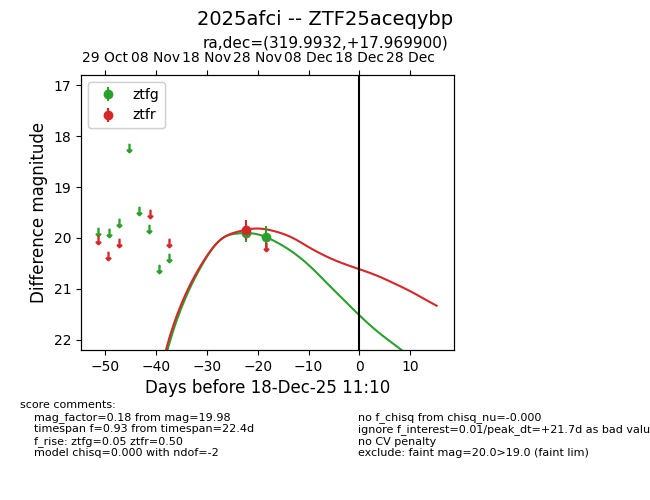
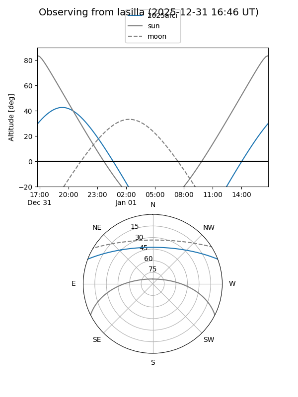
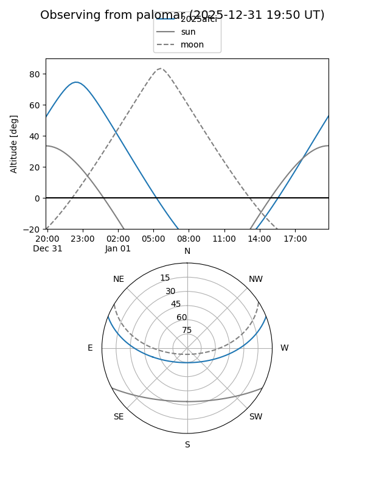
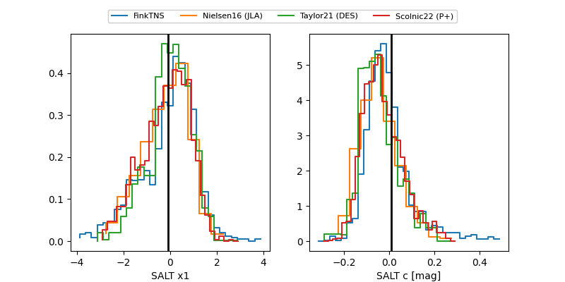

2025afci
Target 2025afci at 2025-12-18 11:17
Aliases and brokers:
FINK: fink-portal.org/ZTF25aceqybp
Lasair: lasair-ztf.lsst.ac.uk/objects/ZTF25aceqybp
ALeRCE: alerce.online/object/ZTF25aceqybp
TNS: wis-tns.org/object/2025afci
YSE: ziggy.ucolick.org/yse/transient_detail/2025afci
alt names
ZTF25aceqybp (ztf,fink_ztf)
2025afci (tns,yse)
Coordinates:
equatorial (ra, dec) = 319.9932,+17.96990
equatorial (HMS+DMS) = 21:19:58.38,+17:58:11.64
galactic (l, b) = (68.2059,-21.73897)
Photometry
last ztfg=19.98, ztfr=19.84
2 ztfg, 1 ztfr detections
Lightcurve

Visibility


Additional plots
